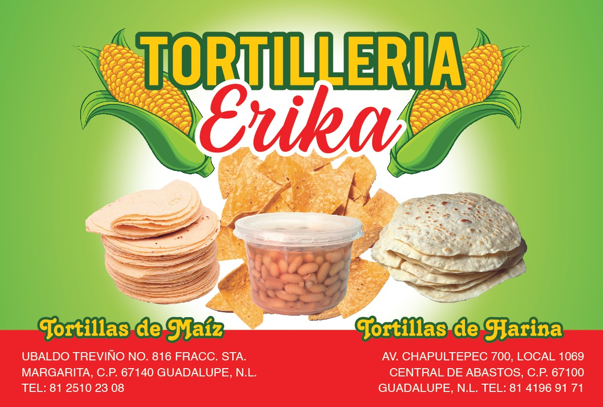

Más de 25 años llevando la auténtica tortilla regiomontana a tu mesa
Tortillería Erika nació en 1998 como un sueño familiar en el corazón de Guadalupe, Nuevo León. Doña Maria, con su pasión por la cocina tradicional mexicana, decidió abrir una pequeña tortillería para ofrecer a su comunidad tortillas frescas y auténticas.
Lo que comenzó como un negocio familiar modesto, se ha convertido en una empresa reconocida por la calidad excepcional de sus productos. Hemos mantenido las recetas tradicionales mientras incorporamos tecnología moderna para garantizar la mejor calidad e inocuidad alimentaria.
A lo largo de los años, hemos crecido no solo en tamaño, sino también en el corazón de nuestros clientes, convirtiéndonos en parte integral de las familias regiomontanas.

Doña Erika abre la primera tortillería en Polanco, Guadalupe, con una máquina tradicional y muchos sueños.
Se incorporan nuevos productos como tostadas y totopos, ampliando la oferta para nuestros clientes.
Implementación de nueva tecnología y procesos para mejorar la calidad y capacidad de producción.
Obtención de certificaciones sanitarias y de calidad, consolidando nuestra posición en el mercado.
Expansión a nuevos mercados manteniendo siempre la calidad y tradición que nos caracteriza.
Producir y distribuir tortillas y productos derivados del maíz y harina de la más alta calidad, preservando la tradición culinaria mexicana y satisfaciendo las necesidades alimentarias de las familias regiomontanas.
Ser la empresa líder en la producción y distribución de tortillas en el noreste de México, reconocida por la calidad excepcional de nuestros productos y nuestro compromiso con la tradición y la innovación.
Dedicación absoluta con nuestros clientes, empleados y la comunidad en general.
Valoramos y respetamos a todas las personas, sus opiniones y su diversidad cultural.
Trabajamos con dedicación y perseverancia para alcanzar la excelencia en todo lo que hacemos.
Pasión y entrega en cada producto que elaboramos, manteniendo la calidad tradicional.
Fomentamos un ambiente de trabajo colaborativo y de apoyo mutuo entre nuestro equipo.
Fidelidad hacia nuestros principios, clientes y la tradición que nos ha formado.
Conoce a las personas que hacen posible la magia de nuestras tortillas
Fundadora y Directora General
25 años de experiencia en la industria alimentariaJefe de Producción
Especialista en procesos alimentarios y control de calidadGerente de Calidad
Certificada en sistemas de gestión alimentariaCoordinador de Distribución
Garantiza la entrega fresca y oportuna de nuestros productosUn proceso artesanal con tecnología moderna para garantizar la mejor calidad
Elegimos cuidadosamente maíz 100% natural, libre de transgénicos y de la mejor calidad.
Proceso tradicional de cocción del maíz con cal para mejorar su valor nutricional.
Molemos el maíz nixtamalizado para obtener masa fresca y de textura perfecta.
Formamos las tortillas con maquinaria especializada manteniendo el grosor ideal.
Cocemos las tortillas a la temperatura perfecta para lograr la textura y sabor ideales.
Empacamos inmediatamente para mantener la frescura y temperatura óptima.
Cumplimos con todos los estándares de calidad y seguridad alimentaria
Registro sanitario vigente que garantiza la seguridad de nuestros productos
Sistema de análisis de peligros y puntos críticos de control implementado
Certificación de productos libres de químicos y conservantes artificiales
Sistema de gestión de calidad certificado para la mejora continua
Generamos más de 25 empleos directos en la comunidad de Guadalupe y municipios aledaños
Ofrecemos programas de capacitación constante para el desarrollo profesional de nuestro equipo
Participamos en programas de apoyo comunitario y donaciones a familias necesitadas
Implementamos prácticas sustentables para reducir nuestro impacto ambiental
Dirección: Ubaldo Treviño #816, Polanco, 67140 Guadalupe, N.L.
Teléfono: +52 8125102308
Horario: Lunes a Sábado de 6:00 a.m. a 3:00 p.m.
Domingos: 6:00 a.m. a 3:00 p.m.